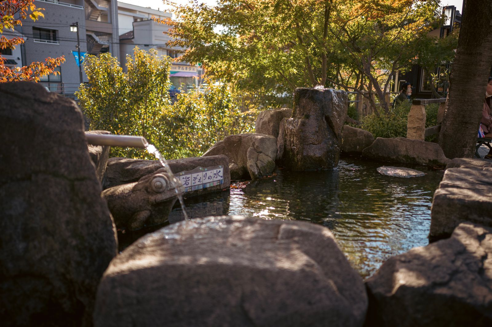
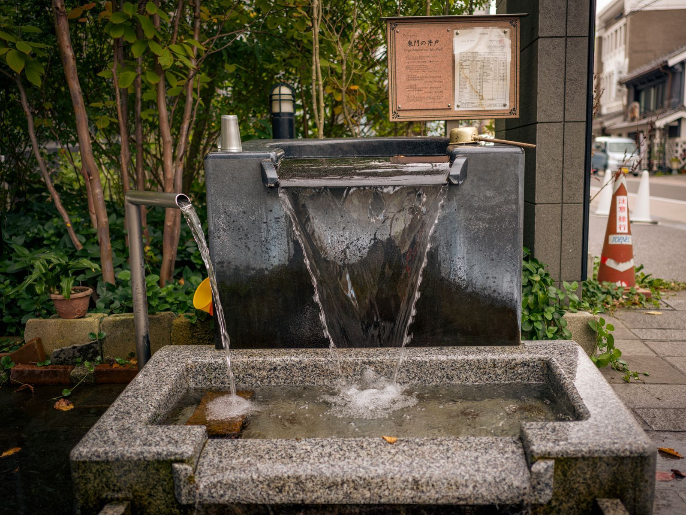
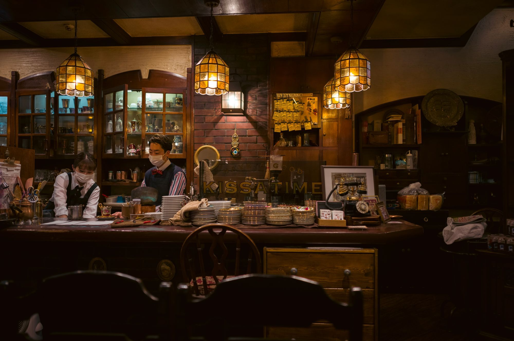
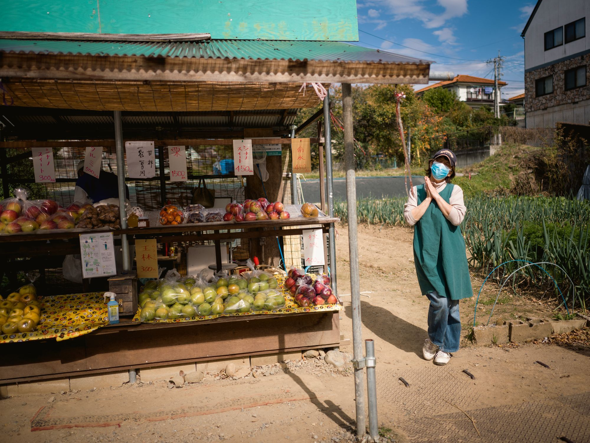
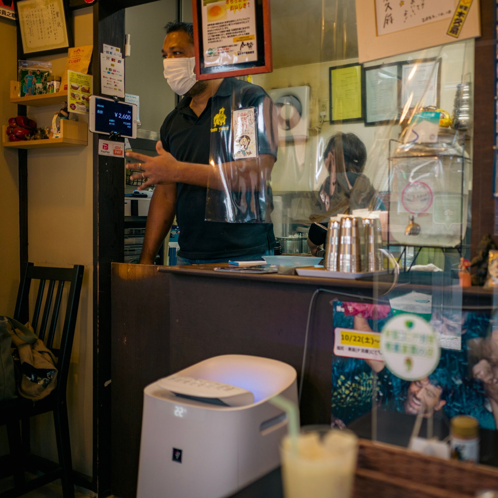
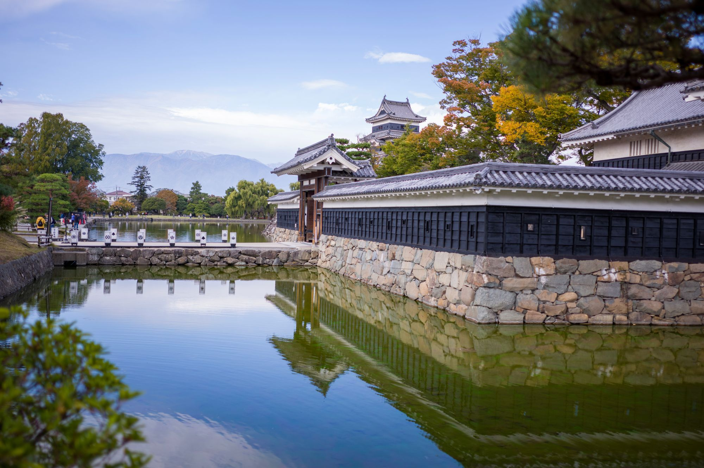

You can hear the water burble every few hundred meters in the Matsumoto city center. Small water fountains and wells abound.

Matsumoto is sure proud of its water. No wonder. It’s in the soup bases, in the hot springs, and in those little fountains in public squares, near the temples and shrines (obviously), and even in front of some of the houses.

There was a queue in front of Coffee Abe (didn’t realize this kissa was so popular!) — so I lined up behind the person who I thought was last in line. And I would’ve stood there like an idiot if not for this girl who saw my confused face and told me, “You have to put your name on the waitlist first.” Again — random acts of kindness.
The place was busy! Interiors — rustic. Coffee — darker and stronger than what I’m used to. But I’m not here for the coffee, really. I’m just soaking in the atmosphere.

From Abe, it’s going to be a long walk. Hiking to Alps Park. A bit of a climb and the first time on this trip I can really feel my legs getting sore.
But then, when I’m almost at my destination, I see a small pop-up fruit stand. Led by curiosity, I come closer — and whaddayaknow — it turns out to be another one of those serendipitous encounters (it’s starting to seem like I’m entitled to one a day while I’m here)!
The owner of this stand keeps giving me samples. Another customer buys me an apple. I’m suddenly showered with kindness. I try to express my gratitude, but can’t say much beyond “arigato gozaimas” and “sumimasen.”
I want to show reciprocity somehow — so I buy the most expensive pack of apples they had. Now I have to carry six apples in my backpack for the next 10 kilometers or so. (It helps that they’re delicious.)

Indian food for lunch. Another recommendation from you-know-who.
The owner is super-talkative. He’s been living in Japan for about 17 years now. We talked about the struggles of us, foreigners, living away from our home countries.
But I’m here for the food. So he also told me about his food philosophy. At Doon Shokudo Idoyama, he serves the same food he eats every day himself. And I have to say — it is different from the Indian food I’ve had in Hong Kong.
When you order his signature dish, you get chicken curry, Japanese rice, yoghurt salad (raita), bread (papadam), and vegetarian curry made out of lentils (dal). And gulab jamun, an Indian-style dumpling ball soaked in syrup. VERY sweet — too sweet for most of the Japanese, he says (it wasn’t too sweet for me, though!).
So you get all of this, but you can’t start eating without him telling you the instructions:
Crumble the papadam into the rice, so the rice has crunch.
Mix the chicken curry with the rice and eat it.
Then mix the dal with the rice and eat it. (He explained that the vegetarian curry is full of fiber so it makes the whole meal easier to digest — and for real, it doesn’t feel as heavy as the curries served in Hong Kong.)
Then eat the raita.
Repeat until done.
Finish with the dumpling.

While walking around Matsumoto, I remembered how I like the colors and smells of autumn. Hadn’t had a chance to experience them in the last six years. And Japanese autumn is lovely.

Soba for dinner. Autumn set. I don’t know the names of half of the things I’m eating, but what the heck. It’s all delicious. Pickles, mushroom tofu, soba (again, the soup base is the highlight — this one’s slightly salty and spicy; I bet I know where the water comes from), and the chestnut ice cream. Everything.
And that’s it for today. I’m exhausted. The good kind of exhaustion. Going to soak one more time in the hotel’s own hot spring (more water!) and get ready for tomorrow. For more of Matsumoto.